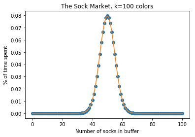

Buffering the Sock Stream
Saturday, April 13, 2019 · 2 min read
It’s the end of week 4 of the quarter and you’ve decided it’s finally time to do some laundry. You somehow transport the massive mound of clothing in your closet to the laundry room, occupy all three machines and also the dishwasher, and finally transport the now-slightly-less-smelly mound of clothing back up the stairs to your room. Then you turn on your favorite Pink Floyd album and begin folding…
You pull out items of clothing from the heap one by one. Shirts and pants you can fold immediately, but socks pose some difficulty: you can’t put them away until they have been paired. So you put them aside on your bedside table to be processed later. Soon, however, the pile of socks on your bedside table grows too large, and the table can only fit so much sock on it.
So you decide to try and manage the situation by eagerly pairing up socks. If you pull a sock out of the heap of clothes and see its partner on the bedside table, you pair them up and put them away. Otherwise, you put the unpaired sock on the bedside table.
Suppose you own an infinite number of socks, each of which is uniformly one of ($ k $) colors. How big does your bedside table need to be? Let’s call the pile of clean clothes the “stream,” and the bedside table the “buffer.” Then the question is, what is the distribution of the buffer size over time as a function of ($ k $)?
Here is one way to think about this: if ($ k = 1 $) then the buffer size is 0 half the time and 1 half the time; the distribution is normal at mean 0.5 and variance 0.25. For larger ($ k $), we can think of this as just a superposition of multiple buffers, one for each ($ k $). The means and variances add, so we expect the distribution to be normal with mean ($ k/2 $) and standard deviation ($ \sqrt{k}/2 $).
Here is another way to think about this: we have a Markov process where the transition from state ($ i $) to ($ i + 1 $) is with probability ($ (k - i)/k $) and to ($ i - 1 $) is with probability ($ i/k $) for ($ 0 \leq i \leq k $). We can create a matrix representing this transition system; then, eigenvectors of this matrix (with eigenvalue 1, and normalized to sum 1) represent equilibrium probability distributions.
So, incredibly, we’ve shown that the coordinates of the ($ \lambda=1 $) eigenvector for this matrix can be computed using the normal CDF. What a fascinating correspondence!
If you don’t believe it, the graph below shows the normal-CDF predictions (orange line) and the elements of the eigenvector (blue dots) for ($ k = 100 $). The IPython notebook that generated this graph is here.
